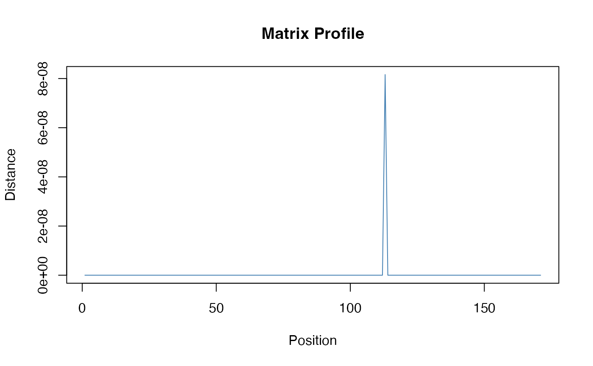

Computes the Matrix Profile using the STOMP (Scalable Time series Ordered-search Matrix Profile) algorithm. The Matrix Profile stores the z-normalized Euclidean distance between each subsequence and its nearest neighbor, enabling efficient motif discovery and period detection for non-sinusoidal patterns.
Value
A list of class "matrix_profile_result" with components:
- profile
Numeric vector of minimum z-normalized distances at each position
- profile_index
Integer vector of nearest neighbor indices (1-based)
- subsequence_length
Subsequence length used
- detected_periods
Candidate periods detected from arc analysis (top 5)
- arc_counts
Arc counts at each index distance (for diagnostics)
- primary_period
Most prominent detected period
- confidence
Confidence score (0-1) based on arc prominence
Details
The Matrix Profile algorithm (Yeh et al., 2016; Zhu et al., 2016) is particularly suited for:
Non-sinusoidal repeating patterns (unlike FFT/spectral methods)
Motif discovery (finding repeated subsequences)
Anomaly detection (subsequences with no good match)
The STOMP variant uses O(n^2) time complexity but is highly cache-efficient. For very long series (>10000 points), consider downsampling.
Period detection is based on "arc analysis": counting how often the nearest neighbor is a fixed distance away. Peaks in arc counts indicate periodicity.
References
Yeh, C. C. M., et al. (2016). Matrix profile I: All pairs similarity joins for time series: A unifying view that includes motifs, discords and shapelets. ICDM 2016.
Zhu, Y., et al. (2016). Matrix profile II: Exploiting a novel algorithm and GPUs to break the one hundred million barrier for time series motifs and joins. ICDM 2016.
Examples
# Periodic sawtooth wave (non-sinusoidal)
t <- seq(0, 10, length.out = 200)
period <- 2
X <- matrix((t %% period) / period, nrow = 1)
fd <- fdata(X, argvals = t)
# Compute Matrix Profile
result <- matrix.profile(fd, subsequence_length = 30)
print(result)
#> Matrix Profile (STOMP)
#> ----------------------
#> Subsequence length: 30
#> Profile length: 171
#> Primary period: 40.00
#> Confidence: 0.4678
#>
#> Top detected periods: 40, 80, 120, 44, 82
#>
#> Profile statistics:
#> Min: 0.0000
#> Mean: 0.0000
#> Max: 0.0000
plot(result)

# Sine wave for comparison
X_sine <- matrix(sin(2 * pi * t / period), nrow = 1)
fd_sine <- fdata(X_sine, argvals = t)
result_sine <- matrix.profile(fd_sine, subsequence_length = 30)